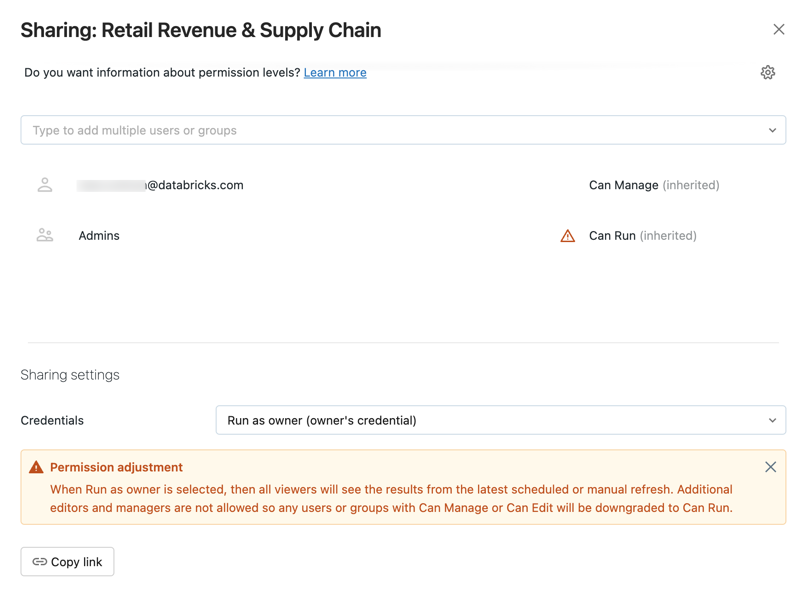
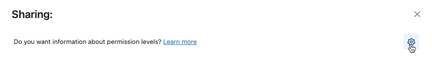

Share Databricks SQL dashboards
This page describes how to share Databricks SQL dashboards with users, groups, and service principals in your workspace.
For information on configuring permissions for Lakeview dashboards, see Share Lakeview dashboards.
Dashboard permissions
A dashboard has five permission levels: No Permissions, Can View, Can Run, Can Edit, and Can Manage.
The table lists the abilities for each permission.
Ability |
No Permissions |
Can View |
Can Run |
Can Edit |
Can Manage |
|---|---|---|---|---|---|
See in dashboard list |
x |
x |
x |
x |
|
View dashboard and results |
x |
x |
x |
x |
|
Refresh query results in the dashboard (or choose different parameters) |
x |
x |
x |
||
Edit dashboard |
x (1) |
x |
|||
Modify permissions |
x |
||||
Delete dashboard |
x |
(1) Requires the Run as viewer sharing setting.
Sharing settings
Dashboards support two types of sharing settings:
Run as viewer: The viewer’s credential is used to execute the queries in the dashboard. The viewer must also have at least Can Use permissions on the warehouse. Users and groups can be added as collaborators using the Can Edit or Can Manage permissions.
Run as owner: The owner’s credential is used to execute the queries in the dashboard. Only the dashboard owner can have Can Edit or Can Manage permissions.
To configure sharing settings:
Click Dashboards in the sidebar.
Click a dashboard.
Click the button at the upper-right.
In the Sharing settings > Credentials field at the bottom of the dialog, select Run as viewer or Run as owner.
Schedule permissions
You can set a schedule so that your dashboard automatically updates with fresh data. See Automatically refresh a dashboard for more information. Schedules are granted permissions distinctly from the query, dashboard, or alert they are assigned to. You can assign permission settings for individual users, groups, or service principals after you create a schedule.
There are five available permission settings:
No Permissions: No permissions have been granted. Users with no permissions cannot see that the schedule exists, even if they are subscribers or included in listed notification destinations.
Can View: Grants permission to view scheduled run results.
Can Manage Run: Grants permission to view scheduled run results.
Can Manage: Grants permission to view, modify, and delete schedules. This permission is required in order to make changes to the run interval, update the subscriber list, and pause or unpause the schedule.
Is Owner: Grants all permissions of Can Manage. Additionally, the credentials of the schedule owner will be used to run dashboard queries. Only a workspace admin can change the owner.
Note
Only users with Can Manage or Is Owner permissions can add or remove themselves as dashboard subscribers or change alert notification settings.
Share a dashboard
In the sidebar, click Dashboards.
Click a dashboard.
Click the button at the top right to open the Sharing dialog. 
Search for and select the groups, users, and service principals, and assign the permission level.
Set the credentials to Run as viewer to assign the Can Edit or Can Manage permissions.
Click Add.
You can also copy the link to the dashboard.
Manage dashboard permissions with folders
You can manage dashboard permissions by adding published dashboards to folders. In most cases, dashboards in a folder inherit all permissions settings of that folder. For example, a user that has Can Run permission on a folder has Can Run permission on the dashboards in that folder. For dashboards that have been published with the Run as Owner credential and shared in a folder, non-owners have their permissions transparently downgraded to Can Run.
To learn about configuring permissions on folders, see Folder permissions.
Note
Dashboard permissions are distinct from schedule permissions. Inherited permissions for dashboards are not automatically applied to a dashboard’s associated schedule. Schedule permissions must be assigned separately.
Share all queries
You can quickly share all queries associated with your dashboard by clicking the gear icon and selecting Share all queries. Queries referenced by the dashboard have separate permissions and are not shared by default when you share the dashboard.
Transfer ownership of a dashboard
If a dashboard’s owner is removed from a workspace, the dashboard no longer has an owner. A workspace admin user can transfer ownership of any dashboard, including one without an owner, to a different user. Service principals and groups cannot be assigned ownership of a dashboard. You can also transfer ownership using the Permissions API.
As a workspace admin, log in to your Databricks workspace.
In the sidebar, click Dashboards.
Click a dashboard.
Click the Share button at the top right to open the Sharing dialog.
Click on the gear icon at the top right and click Assign new owner.
Select the user to assign ownership to.
Click Confirm.